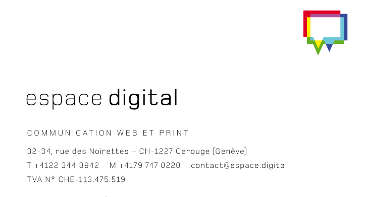

CONTEXTE
Agence
espace.digital est une agence spécialisée dans le développement de solutions digitales sur mesure. Elle accompagne différents clients dans la création et l'évolution de leurs projets web.
Encadrant du stage
Jonas Dumas
- Consultant en communication et Formateur
- Fondateur et consultant senior d'espace.digital
Contexte du stage
7 mois
95% télétravail
Développeur web (stagiaire)
Bugfix
Fonctionnalités
Refonte
Objectifs & attentes
Avant
- Mieux comprendre le travail professionnel
- Nouveaux skills et/ou compétences
- Améliorer mes pratiques
- Première expérience pro
Ce stage a été ma première expérience professionnelle et une immersion concrète dans le monde du développement web professionnel. J'espérais pouvoir me rendre compte des contraintes et apprendre au côté d'un dev senior.
Pendant
- Nouveaux langages
- Conseils sur la structuration.design, etc
- Contraintes liés au pro
J'ai pu travailler sur des projets concrets avec des contraintes professionnelles. J'ai reçu de nombreux conseils même si beaucoup de travail c'est fait en autonomie.
Voir bilan